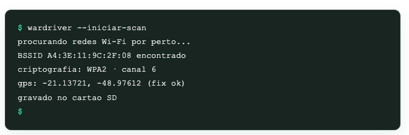

Um dispositivo pequeno para mapear redes Wi-Fi da região
O WARDRIVER é um projeto de faculdade que usa um ESP32 barato para detectar redes Wi-Fi próximas e mostrar num mapa quais estão abertas ou com criptografia fraca.

Por que a gente fez isso
Rede aberta, senha fraca ou WPS ligado é mais comum do que parece, principalmente em casa e em comércio pequeno. O problema é que não existe uma forma fácil ou acessível de enxergar isso.
O WARDRIVER é o projeto integrador da pós em IoT do IFSP Catanduva, feito nas disciplinas de Desenvolvimento de Projetos I e II. A ideia surgiu de uma pergunta simples: dá pra saber, de um jeito barato, o quanto as redes Wi-Fi de um bairro estão expostas?
Um sensor que mapeia as redes por onde passa
O dispositivo é montado com um ESP32, que fica escutando os sinais que qualquer roteador transmite o tempo todo (os beacon frames). Pra cada rede encontrada, ele anota nome, tipo de criptografia, canal e se o WPS está ligado, junto com a posição do GPS.
Os dados vão sendo salvos num cartão microSD durante a coleta. Quando o dispositivo passa perto de uma rede conhecida, ele manda tudo pra um servidor que organiza os dados num mapa, mostrando onde estão as redes mais vulneráveis da região.